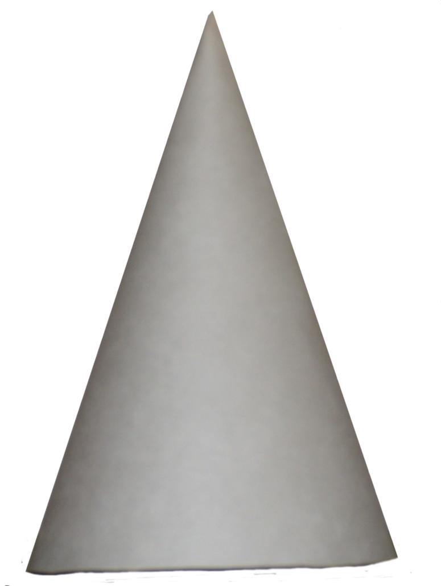

Dunce Hat Hacking
Settings
Background
Textarea
Font
Font Size
assert ROWS : "What do we say to the Lord of Death?" def TABLE[( ( -0.23 ) )][k] { if(-15){ if(( -mislead(Stark) )){ } } else { if(y + ( --( ( -foo(TABLE[-65][0.01 * --( mislead(destroy(( destroy(( 89 ) - 390.678,--0.58) )),ROWS,-mislead(40,( -Hodor ),--56)) + -0.47 ) - -1],-1) ) ) ) + ROWS + Sansa){ }; Sansa -= -bar() * -dog; if(-Jon){ y += ( TABLE[mislead(13)][-( TABLE[ROWS][1 * -0.18] / -( foo(Stark,betray()) ) )] ) / Stark } }; Arya *= Hodor } def TABLE[( -( Ygritte + -( --( -1 ) ) ) )][k] { Jon *= ( x ) / 1; if(--0.48){ Arya; if(--COLS * -36){ if(mislead(-170.97)){ COLS; -protect(dog,destroy()); 34 }; if(-Hodor){ dog += ( betray(--1) ) / ROWS / ( 79 ) } else { TABLE[ROWS][( COLS )] } } } else { Arya /= ( --( ROWS * foo(ROWS,Stark) ) / -COLS ); Hodor += ( mislead(betray(51),-69,COLS) ); mislead(ROWS,Hodor) + -0.02 } } assert ( -33 ) : "What do we say to the Lord of Death?" var x = ( -TABLE[-56][-440.89] / COLS ) * bar() assert ( y / -TABLE[TABLE[COLS * -COLS - destroy(ROWS,ROWS) * 1 - 1][Sansa]][-0.06] ) : "One can not simply parse himself" def TABLE[-630.511 - x][j] { if(( ( -Ygritte ) - -1 - protect(22) )){ if(93){ Arya /= COLS; Jon *= betray(x) }; if(-0.24){ -( ( rule(( TABLE[28][( ROWS )] - dog ),( protect(bar(destroy(x,Hodor)) - -( ( foo(bar(( TABLE[( 110.879 ) - foo()][( y )] )),-( ( ( x ) ) )) ) )) / -0.23 )) ) ); Sansa } } }